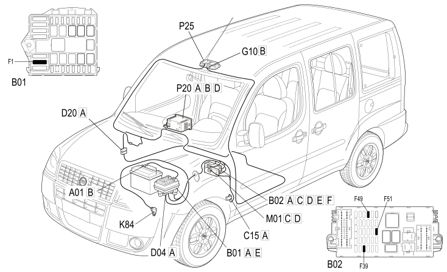

E4090 NAVIGATOR COMPONENT LOCATION
- Path
- Electrical equipment > 1 ELECTRICAL FUNCTIONS > E40 INSTRUMENT PANEL > E4090 NAVIGATOR > E4090 NAVIGATOR COMPONENT LOCATION
- Kind
- topic
- Applies to
- engines: 1.4 8v, 1.6 16v, 1.3 JTD 16V, 1.9 JTD 8V; production: da 12/03; only with equipment: MY 2005
- Interactive page
- https://sloeber94.github.io/elrnDB-fDbl/en/#/223002541
Applies to: engines: 1.4 8v, 1.6 16v, 1.3 JTD 16V, 1.9 JTD 8V; production: da 12/03; only with equipment: MY 2005

Component code | Description | Reference to the assembly |
|---|---|---|
JUNCTION UNIT | ||
JUNCTION UNIT UNDER DASHBOARD | ||
DASHBOARD EARTH, DRIVER'S SIDE | ||
FRONT/ENGINE COUPLING | ||
DASHBOARD/REAR COUPLING | ||
FRONT COURTESY LIGHT | ||
IGNITION SWITCH | ||
SPEEDOMETER SENSOR | ||
BODY COMPUTER | ||
RADIO | ||
AERIAL POWER SUPPLY |
Topics linked from this page (16)
- 2180A milometer control
- 5505A multi-function components
- 5520A ignition switch
- 5570T car radio and car telephone
- 7040E interior courtesy light system
- B001 JUNCTION UNIT
- B002 JUNCTION UNIT UNDER DASHBOARD
- C015 DASHBOARD EARTH, DRIVER'S SIDE
- D004 FRONT/ENGINE COUPLING
- D020 DASHBOARD/REAR COUPLING
- G010 FRONT COURTESY LIGHT
- H001 IGNITION SWITCH
- K84 SPEEDOMETER SENSOR
- M001 BODY COMPUTER
- P020 RADIO
- P025 AERIAL POWER SUPPLY